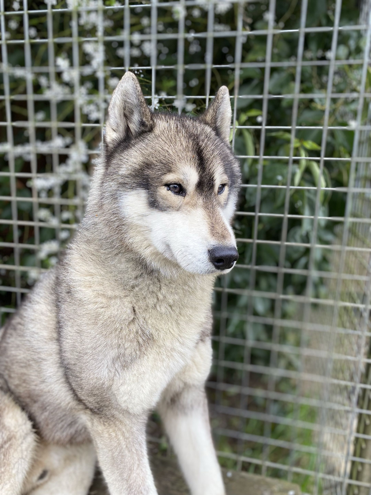
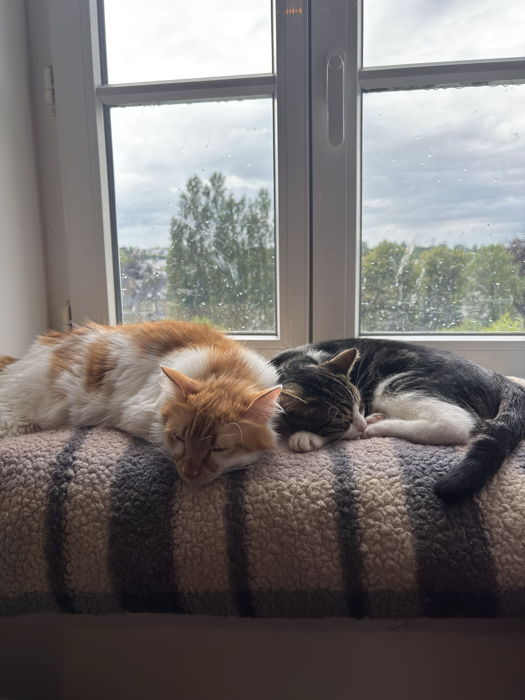
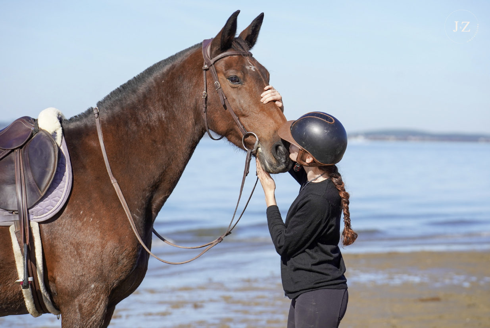
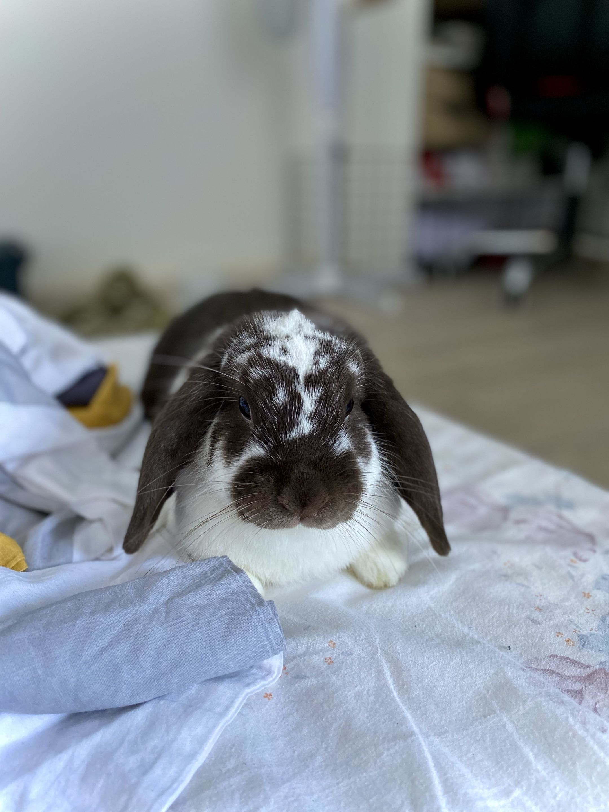
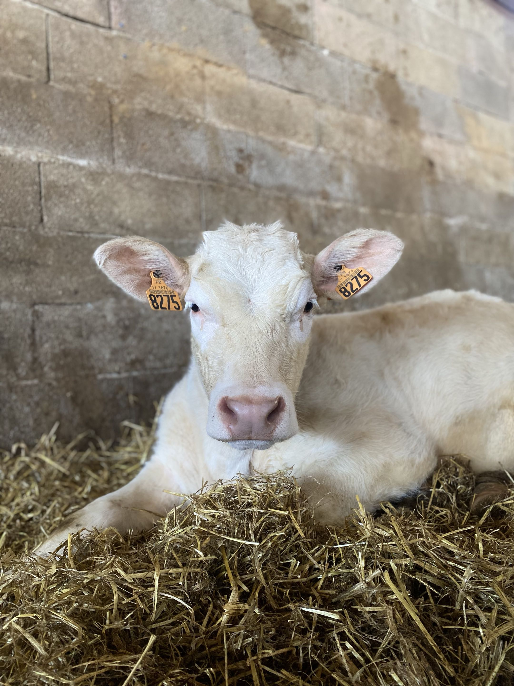

Ostéopathie animale à domicile pour les chevaux, chats, chiens, NAC et bovins. Parage et ferrage* des ânes et des chevaux à Villedieu-les-Poêles et dans les environs.
Prendre rendez-vousC’est une pratique visant à relâcher les tensions du corps de votre animal pour l’aider à retrouver du confort et une mobilité optimale.
Une consultation d’ostéopathie ne remplace pas un suivi vétérinaire.
Je propose également un suivi maréchalerie pour vos équidés.
Initiation et suivi régulier. Je propose également de la rééducation pour les chevaux ayant eu des expériences négatives.
Ferrage uniquement en Duplo pour le moment.
Un parage est à prévoir toutes les 8 semaines maximum. Au-delà, une majoration tarifaire s’applique.
Cavalière depuis mes 3 ans et entourée d’animaux depuis le berceau, je me suis naturellement orientée vers un métier aidant la condition animale. J’ai à cœur d’aider vos animaux en leur permettant de mieux vieillir.

Sportifs, seniors, chiots

Douceur et patience

Ostéo, parage et ferrage

Lapins, cobayes, furets…

Élevages et particuliers
Je prends le temps d’observer le comportement, la posture et la mobilité de votre animal.
Je repère les tensions et les blocages qui peuvent gêner le confort et le bon fonctionnement.
Je vous guide avec des conseils adaptés pour préserver le bien-être de votre animal au quotidien.
Je soigne les chiens, chats, chevaux, NAC et bovins, selon les cas et les besoins de chacun.
Quand votre animal montre une gêne de mobilité, un changement de comportement, une raideur, une boiterie ou après un traumatisme.
Non. L’ostéopathie est un complément utile, mais elle ne remplace pas le suivi vétérinaire ni les soins médicaux nécessaires.
Le délai varie selon la saison et les demandes, mais il est souvent possible d’obtenir un créneau rapide selon la zone d’intervention.
| Cheval | 80 € |
|---|---|
| Chien | 50 € |
| Chat | 50 € |
| NAC | 40 € |
| Vache | 40 € |
| Parage | 50 € |
|---|---|
| Initiation au parage | 30 € |
| Ferrage Duplo | 70 € |
Fers non fournis : le propriétaire doit les acheter, car leurs dimensions doivent être prises au préalable.
Fréquence du parage : toutes les 8 semaines maximum. Au-delà, une majoration tarifaire s’applique.
Frais de déplacement en supplément selon la distance.
Je me déplace à Villedieu-les-Poêles et dans un rayon de 50 km autour. Des frais de déplacement sont appliqués selon la distance : contactez-moi pour un devis précis.
La carte ne s'affiche pas ici ? Ouvrir dans Google Maps
Rayon d'intervention : 50 km autour de Villedieu-les-Poêles. Voir sur Google Maps
Un renseignement, une question ou besoin d'un rendez-vous pour votre animal ? Appelez-moi directement.